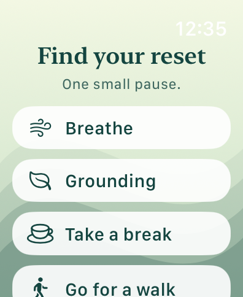
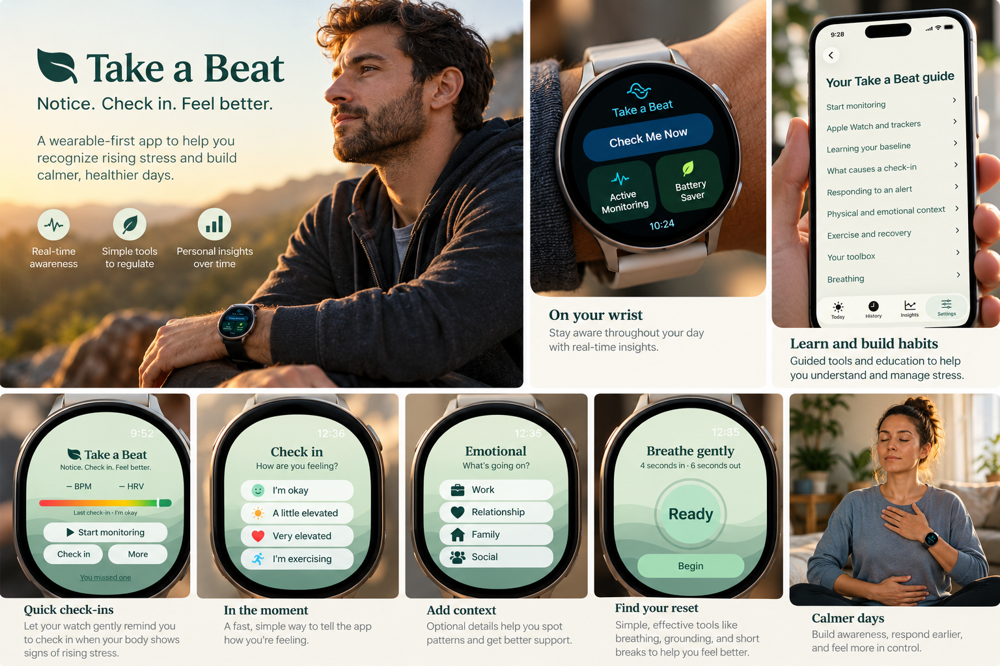
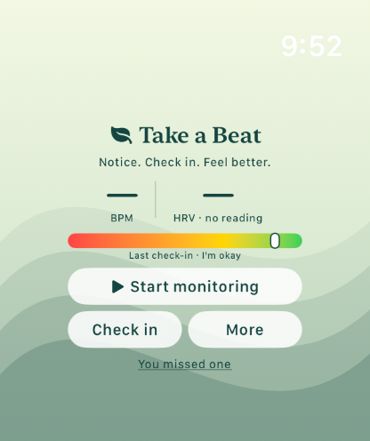
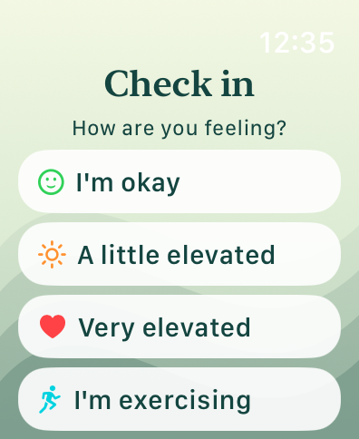
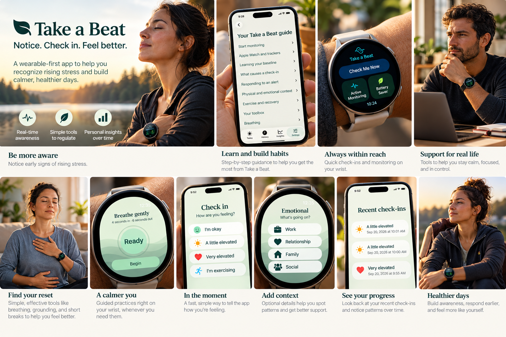
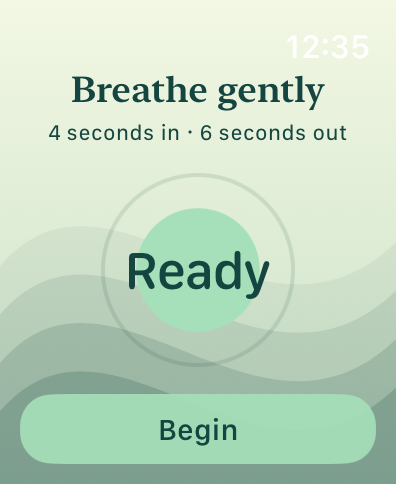
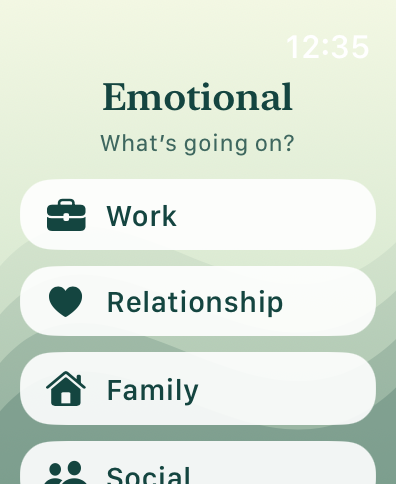
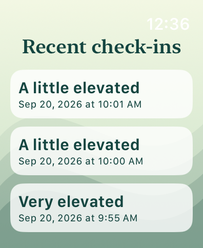
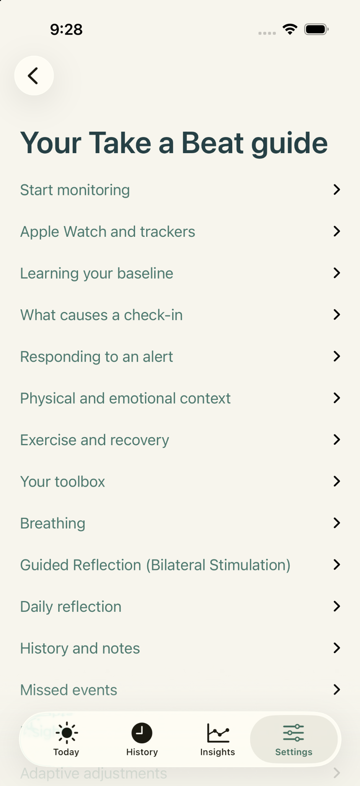

Find your reset
Breathing, grounding, a break, or a walk.
Take a Beat notices meaningful changes in your body and gives you a chance to check in, understand what’s happening, and choose what helps.
Built as a regulation aid — not a diagnosis or emergency service.

YOUR BODY CAN REACT BEFORE YOU REALIZE IT
Changes in heart rate, HRV, movement and your personal baseline can be a useful signal that something is happening. When Take a Beat notices a meaningful change, it gives you a discreet opportunity to check in.
A GENTLE TAP WHEN IT MATTERS
You can say you’re okay, a little elevated, very elevated, or exercising. If something was missed, tell Take a Beat. Your feedback is part of how the experience becomes more personal.


NOT ANOTHER GENERIC STRESS SCORE
Take a Beat is designed around your baseline and your feedback—not a one-size-fits-all number. Confirm useful alerts, add context, and flag missed moments so the system can get better at recognizing what matters to you.

WHEN YOU NEED A RESET
No digging through your phone when you’re already overloaded. Choose a small action and get on with your day.

Breathing, grounding, a break, or a walk.

A simple paced breathing exercise when you want it.

Capture what was going on without writing an essay.

See recent check-ins and start noticing patterns.

UNDERSTAND THE APP, NOT JUST THE ALERT
The in-app guide explains monitoring, baseline learning, alerts, physical and emotional context, exercise and recovery, breathing, reflection, history, and missed events.
Take a Beat is intentionally careful about the distinction between physiological signals and emotions. Your watch can notice a change. You decide what it means.
HELP BUILD TAKE A BEAT
We’re preparing a small beta for people willing to wear Take a Beat during normal life and tell us when it gets things right—and when it doesn’t.
Alert accuracy • Personal baseline learning • Battery life • Watch monitoring • Check-ins • Regulation tools
Apple Watch and Galaxy Watch users willing to give straightforward feedback about the experience.